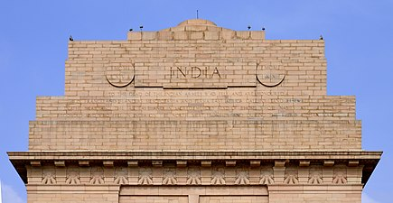
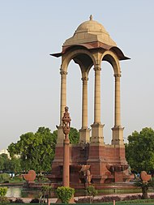
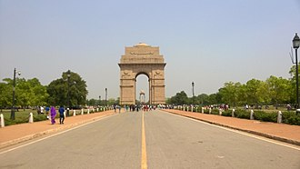
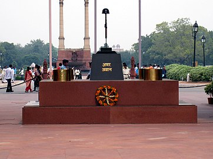

India Gate
The India Gate (formerly known as the All India War Memorial) is a war memorial located astride the Rajpath, on the eastern edge of the "ceremonial axis" of New Delhi, formerly called Kingsway.
It stands as a memorial to 84,000 soldiers of the British Indian Army who died in between 1914 and 1921 in the First World War, in France, Flanders, Mesopotamia, Persia, East Africa, Gallipoli and elsewhere in the Near and the Far East, and the Third Anglo-Afghan War. 13,300 servicemen's names, including some soldiers and officers from the United Kingdom, are inscribed on the gate.
Designed by Sir Edwin Lutyens, the gate evokes the architectural style of the memorial arch such as the Arch of Constantine, in Rome, and is often compared to the Arc de Triomphe in Paris, and the Gateway of India in Mumbai.
★Inspiration
The cornice of the India Gate is inscribed with Imperial suns while both sides of the arch have INDIA, flanked by the dates MCMXIV ('1914'; on the left) and MCMXIX ('1919'; on the right). Below the word INDIA, in capital letters, is inscribed:
Inscription at top of the gate
To the dead of the Indian Armies who fell and are honoured in France and Flanders, Mesopotamia and Persia, East Africa, Gallipoli and elsewhere in the Near and Far East and in Sacred Memory also of those whose names are here recorded and who fell in India on the North West Frontier and during the Third Afghan War.
13,313 names are engraved out of which 12,357 are Indian. Access to read the names on the memorial is restricted, though they can be seen on the Commonwealth War Graves Commission (CWGC) website, which lists the names with their respective date of death, unit name, regiment, place on gate where name is inscribed, location, and other information)

★Canopy
About 150 metres (490 ft) east of the gate, at a junction of six roads, is a 73 feet (22 m) cupola, inspired by a sixth-century pavilion from Mahabalipuram. Lutyens used four Delhi Order columns to support the domed canopy and its chhajja
Statue of King-Emperor George V
In the autumn of 1930, Jagatjit Singh, the Maharaja of Kapurthala State, organised an appeal amongst the Indian princely rulers to erect a statue of King-Emperor George V in New Delhi to commemorate the sovereign's recent recovery from sepsis.[15] As originally conceived, the statue would have depicted the monarch in marble riding in a howdah atop a red stone elephant; a canopy was not then included in the design.[16] The final concept, approved by George V before his death, dispensed with the elephant, instead incorporating a red stone canopy and pedestal, with the pedestal standing 34.5 feet (10.52 m) tall.[17] An 18.75 feet (5.72 m) tall marble statue of the King-Emperor wearing his Delhi Durbar coronation robes and Imperial State Crown, bearing the British globus cruciger and sceptre, was placed atop the pedestal, which bore the Royal Coat of Arms and the inscription GEORGE V R I, the "R I" designating him as 'Rex Imperator' or 'King Emperor'.[17][18] The combined height of the statue and pedestal was 53.25 feet (16.23 m); while the pedestal and canopy were designed by Lutyens, the statue was designed by Charles Sargeant Jagger of the Royal Academy of Arts. The canopy was topped by a gilded Tudor Crown and bore the Royal Cyphers of George V,[19] with the completed monument intended to "mark the loyalty and attachment of the Ruling Princes and Chiefs of India to the Person and Throne of the King-Emperor."[17] Following the premature death of Jagger, the statue's head and crown were completed by one of his assistants in England and then shipped to India, while the remainder of the monument was carved in India.

★Design and structure
The memorial-gate was designed by Sir Edwin Lutyens, who was not only the main architect of New Delhi, but also a member of the Imperial War Graves Commission and one of Europe's foremost designers of war graves and memorials.
He designed sixty-six war memorials in Europe, including the highly regarded Cenotaph in London in 1919, the first national war memorial erected after World War I, for which he was commissioned by David Lloyd George, the British prime minister.[11] The memorial in New Delhi, like the Cenotaph in London, is a secular memorial, free of religious and "culturally-specific iconography such as crosses". Lutyens according to his biographer, Christopher Hussey, relied on the "elemental mode", a style of commemoration based on "universal architectural style free of religious ornamentation".
The India gate, which has been called a "creative reworking of the Arc de Triomphe" has a span of 30 feet, and lies on the eastern axial end of Kingsway, present day Rajpath, the central vista and main ceremonial procession route in New Delhi.The 42-metre (138-foot)-tall India gate, stands on a low base of red Bharatpur stone and rises in stages to a huge moulding. The shallow domed bowl at the top was intended to be filled with burning oil on anniversaries but this is rarely done.[citation needed] The memorial-gate hexagon complex, with a diameter of about 625 metres, covers approximately 306,000 m2 in area.

★Amar Jawan Jyoti
Amar Jawan Jyoti, or the flame of the immortal soldier, is a structure consisting of black marble plinth, with reversed rifle, capped by war helmet, bound by four urns, each with the permanent light (jyoti) from compressed natural gas flames,[25] erected under the India gate to commemorate Indian soldiers martyred in the war of the liberation of Bangladesh in December 1971. It was inaugurated by the then Prime Minister Indira Gandhi on 26 January 1972, the twenty-third Indian Republic Day.[citation needed].Since the installation of the Amar Jawan Jyoti, it has served as India's tomb of the unknown soldier.
It is staffed around the clock by the Indian armed forces.Wreaths are placed at the Amar Jawan Jyoti every Republic Day, Vijay Diwas, and Infantry Day by the Prime Minister and the Chiefs of the Armed Forces.
On 21 January 2022 the Amar Jawan Jyoti at India Gate was merged with the Amar Jawan Jyoti at the National War Memorial.

★Symbolism
Due to the global attention that it has received and the millions of visitors it attracts, the Taj Mahal has become a prominent image that is associated with India, and in this way has become a symbol of India itself.
Along with being a renowned symbol of love, the Taj Mahal is also a symbol of Shah Jahan’s wealth and power, and the fact that the empire had prospered under his rule Bilateral symmetry dominated by a central axis has been used by rulers as a symbol of a ruling force that brings balance and harmony, and Shah Jahan applied that concept in the making of the Taj Mahal. Additionally, the plan is aligned in the cardinal north-south direction and the corners have been placed so that when seen from the center of the plan, the sun can be seen rising and setting on the north and south corners on the summer and winter solstices respectively. This makes the Taj a symbolic horizon.